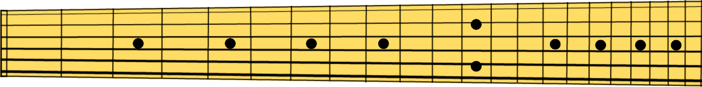

Hz
A
4
=
440
Hz
Auto
Wybierz nuty do wyświetlania:
Wszystkie
Całe
Krzyżyki
Wyczyść
Konkretna oktawa:
Zaawansowane
Aplikuj zaawansowane?
Interwał (sek):
Zmień dźwięk po zagraniu dobrze
Włącz gryf gitary
Start
Stop
Ustawienia

×
Zaawansowane
Zaznacz wszystkie nuty
Zaznacz tylko całe
Zaznacz tylko krzyżyki
Wyczyść
Gitara
Gitara 24 progi
Gitara 22 progi
Gitara 21 progów
Gitara 7 strunowa
Gitara 8 strunowa
Struna niska E
Struna niska E - 2 oktawy
Struna niska - drop D
Struna niska - drop D - 2 oktawy
Struna A
Struna A - 2 oktawy
Struna D
Struna D - 2 oktawy
Struna G
Struna G - 2 oktawy
Struna B
Struna B - 2 oktawy
Struna wysoka E
Struna wysoka E - 2 oktawy